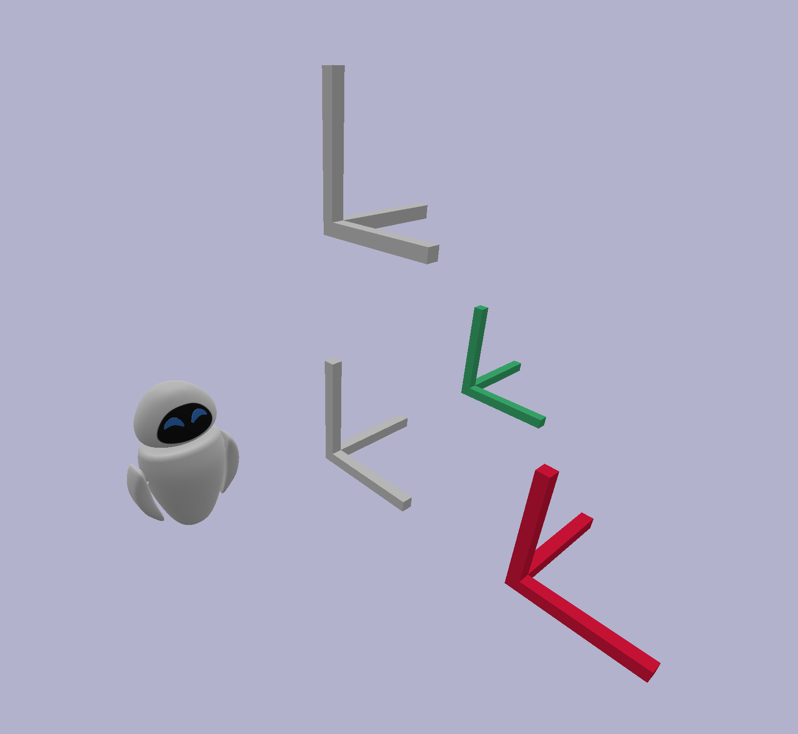

Describe your environment
There is no place like 127.0.0.1
Make it spawn
Now that we have a way to link entities with some of their visual features, we just have to declare the entities to be loaded and their location. To do so, we will create a new configuration file dedicated to the static entities and we will use a new perception module.
Setting the objects' location
As we only consider the static environment for the moment, the description of the objects to be loaded as well as their location can be put in a simple configuration file. Let's create a new configuration file names "static_env.yaml" in the "configurations" folder of the tutorials package. Then, paste in it the following content.
The content and the structure of this file are really simple. In there, we find as roots, the name of the individuals to be loaded. These names are exactly the same as the ones described in the ontology.
Bellow each individual, we find two possible keys being "position" to describe translation, and "orientation" to describe rotations. Each of them can have three fields for their x, y, and z components. To avoid too long files, all undefined fields are assigned to zero by default.
With our current file, we have thus described that the frame_obj object is at the origin of the world. If you have well followed, this description could have been shortened by simply putting the entity name with no field below.
For the three other objects, they are all shifted on a different axis of the world.
The static objects perception module
With Overworld, the general inputs are always perception modules. To spawn a static environment, Overworld comes with a StaticObjectsPerceptionModule which takes as a parameter a configuration file.
Let's put it into practice by modifying our "overworld.yaml" file. Replace its content with this new one:
Where previously we only used a "robot" module, you can see that we now have an "objects" field with a StaticObjectsPerceptionModule in it. This module is instantiated with the name "static".
At the end of the file, you can see that the module takes one parameter being a configuration file. In our case, this file is the one we created just before.
As a reminder, if you want to:
- Change an object's visual features you have to modify the ontology.
- Change the objects to be spawned or their location, you have to modify the static_env configuration file.
- Load a completely new environment, you have to modify the file parameter of the StaticObjectsPerceptionModule in the module configuration file.
Launching Overworld
The way to launch Overworld is exactly the same as before. We do not need to modify our overworld launch file.
Nevertheless, we have to add our new ontology file to ontologenius.
To do so, add $(find overworld_tutorials)/ontologies/env.owl to the "files" argument in the ontologenius launch file.
We are now ready to launch Overworld! In different terminals, run the following in order:
Moving a bit the robot aside, you should get the following in the Bullet window.
Both the OBJ and STL meshes have been loaded correctly and the colors applied to two of the frames have been applied. Nevertheless, we can notice that the texture in Blender we made has not been applied. While this is normal for the STL mesh which does not embed texture data, the OBJ should have.
Let's fix it in the next part of this tutorial.